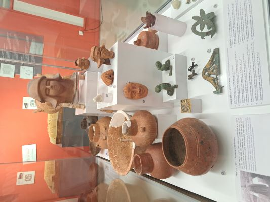

"Welcome to my Adventure Page, where I share my aspirations,
experiences, and the incredible places I hope to visit. From wandering
through Ethiopia's breathtaking historical landmarks to seeking
thrilling experiences like skydiving, each adventure holds a special
story.
Here, you'll find my bucket list of must-see destinations, daring
challenges I want to conquer, and moments that inspire me to embrace
the unknown. Join me as I dream big, seek new horizons, and make
unforgettable memories along the way. Let's explore the world, one
adventure at a time!"
Exploring the National Museum of Ethiopia
Not long after I joined Addis Ababa University that is located at 5
kilo branch, I learned the national museum of Ethiopia is located
around there and I didn't waste my time to find out what it holds as
Interest in history. And as I thought it really
didn't disappoint it was a place that beautifully preserves
Ethiopia's rich cultural and historical heritage. Walking through
the halls, I was immediately drawn to the museum's most famous
exhibit: Lucy (Dinkinesh), the fossilized remains of a
3.2-million-year-old ancestor. Standing in front of her, I felt a
deep connection to humanity's shared history.
A glimpse inside the National Museum, featuring historical
artifacts and Lucy's remains.
The museum also showcased stunning artifacts, ancient manuscripts,
and traditional Ethiopian art. I spent a lot of time admiring the
vibrant paintings and intricate sculptures that told stories of the
country's past. Each piece seemed to whisper tales of kings, queens,
and traditions long gone yet still alive in spirit.
A stunning art at the national museum.
A day at kuriftu water park
It was a sunny day when my parents decided to take our family to
kuriftu water park, Located in Bishoftu, just a short drive from
Addis Ababa.though we didn't know at the time. I was not that
interested at first but we still went their and it turns out to be
one of the best times of my life.
As I entered, I was greeted by the vibrant energy of the park. The
sparkling pools, colorful slides, and cheerful laughter of visitors
set the tone for a day filled with joy. I started with the lazy
river, a gentle and relaxing ride that let me drift along while
enjoying the park's beautiful landscape.
The wave pool of Kuriftu Water Park.
The highlight of my visit was the wave pool, where I felt like I was at the beach, enjoying the artificial waves crashing against me. For a thrill, I ventured onto the giant water slides, where each twist and turn left me exhilarated and ready for more.
A dinning with my family
One evening, my family and I decided to visit Chanoly Restaurant, a place famous for its Japanese cuisine. As someone who has always been fascinated by Japanese culture, I was thrilled at the idea of trying authentic Japanese noodles, a dish so common yet so iconic in Japan.
As soon as we entered, the warm lighting, serene decor, and subtle aroma of spices welcomed us. The restaurant had an inviting ambiance, with bamboo accents and calming instrumental music that set the stage for a delightful evening.
Dinning noodles at Chanoly
That evening wasn't just about the food; it was about creating memories with my parents and siblings, trying something new, and laughing over our attempts to master chopsticks. It's one of those nights I'll always hold dear.
To capture the moment, I recorded a short video of the restaurant's cozy ambiance and the beautiful dishes being served. Take a look:
My Bucket List
Here's a list of experiences and places I aspire to explore and
achieve:
Historical Places
Adventurous Activities
Cultural Experiences
Adventure Gallery
A splash of water at kuriftu water parkA sculpture at National museumA sitting sculputre at national museum

pottery at National museumcelebration of Timketcelebration of Timketcelebrating Timket with my sisterDinning salad at chanoly